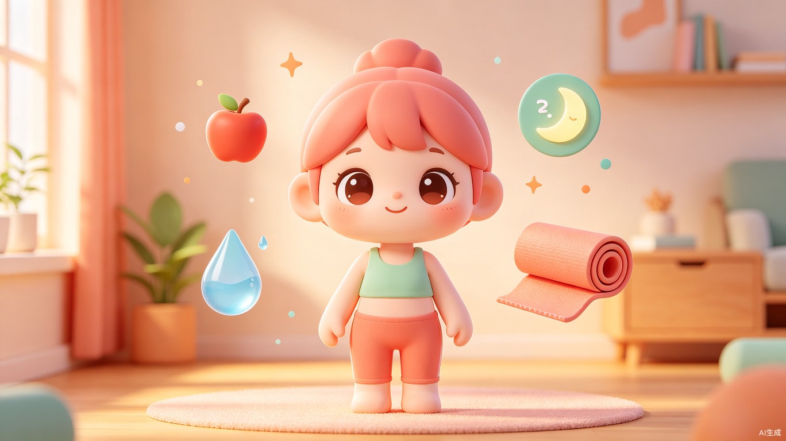
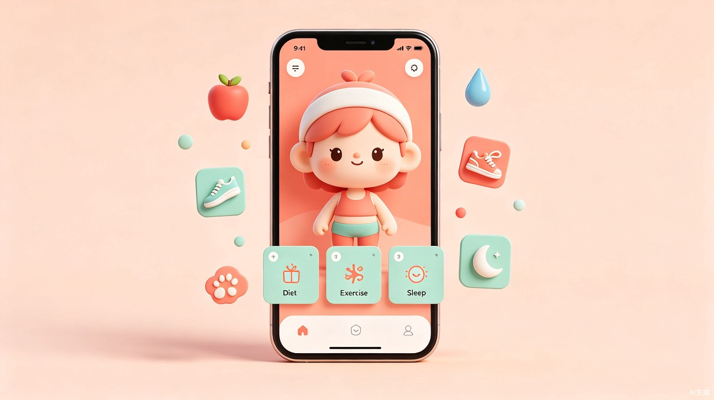
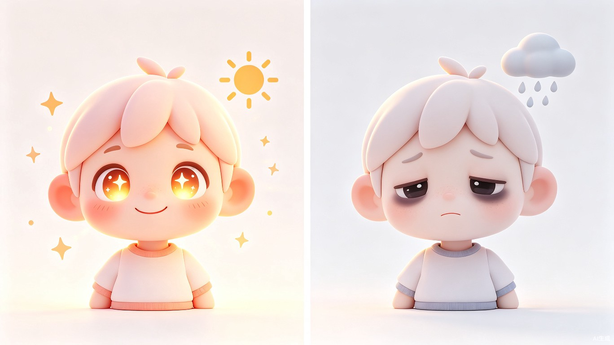

数字孪生生活方式养成系统 — 产品方案文档
遇见另一个自己Mini Me 是一款基于数字孪生概念的生活方式养成 App。用户上传自己的照片，AI 生成一个 Q 版缩小的数字人"Mini Me"。这个数字分身会根据用户真实的饮食、运动、睡眠和情绪数据产生形象变化——熬夜后出现黑眼圈、饮食不均衡导致肤色暗沉、坚持运动后体态变得更加挺拔。
通过"看到另一个自己的状态变化"这一情感镜像机制，Mini Me 从 饮食、锻炼、压力管理和情绪健康 四个维度，以陪伴式而非说教式的方式，帮助用户建立更健康的生活习惯。

数字人形象需要在"像我自己"和"可爱不恐怖"之间找到最佳平衡点。
| 维度 | 设计决策 | rationale |
|---|---|---|
| 面部相似度 | 保留核心五官特征，2.5~3头身Q版比例 | 确保"这是我"的认同感，降低恐怖谷效应 |
| 渲染风格 | 柔和光影3D卡通渲染 | 跨年龄层接受度高，情绪表达夸张清晰 |
| 体型设计 | 小巧圆润Q版比例，头部占比大 | 突出面部表情变化（核心视觉反馈区） |
| 色彩系统 | 高饱和度低对比度马卡龙色系 | 传递积极、治愈、轻量的产品情绪 |
Mini Me 的形象由四层动态叠加组成，每层独立响应不同维度的健康数据变化：
graph TD
A[Mini Me 形象] --> B[基础面容层
固定不变]
A --> C[状态表情层
当日/近3天数据]
A --> D[健康体征层
7~14天趋势]
A --> E[环境特效层
即时反馈]
B --> B1[核心五官特征
眉眼轮廓/脸型/发型]
C --> C1[表情疲惫/开心/焦虑
眼神明亮/黯淡]
D --> D1[黑眼圈/肤色/体态
痘痘/肌肉线条]
E --> E1[头顶乌云/星星粒子
彩虹光环/礼花]
| 变化维度 | 具体表现 | 触发条件 |
|---|---|---|
| 眼部状态 | 黑眼圈（轻/中/重度）、红血丝、眼袋、明亮有神 | 睡眠质量、屏幕使用时间 |
| 肤色气色 | 暗沉发黄、苍白、红润光泽、痘痘/油光 | 饮食均衡度、水分摄入、作息规律 |
| 体态胖瘦 | 圆润度微调、小肚腩、肌肉线条 | 运动频率、热量摄入与消耗 |
| 精神状态 | 表情疲惫/焦虑/放松/开心、姿态耷拉/挺拔 | 压力指数（HRV）、情绪记录 |
| 发型乱整 | 蓬松整洁 vs 乱翘炸毛 | 综合健康评分 |
| 特殊特效 | 头顶乌云（压力大）、小星星（状态好）、光环（连续达标） | 短期情绪与成就状态 |

| 方案 | 技术原理 | 生成质量 | 成本 | 速度 | 一致性 | 推荐 |
|---|---|---|---|---|---|---|
| InstantID | 扩散模型零样本身份保留，IdentityNet提取面部特征 | 高 | 低 | 快（秒级） | 高 | ★★★★★ |
| IP-Adapter + FaceID | FaceID嵌入保身份 + CLIP嵌入保结构 | 高 | 低 | 快 | 高 | ★★★★★ |
| LoRA微调训练 | 基于Stable Diffusion用5~20张照片训练个性化LoRA | 极高 | 中 | 慢（10~30分钟训练） | 极高 | ★★★★ |
| 商业API | 封装上述技术的SaaS服务（fal.ai/Replicate等） | 中高 | 高 | 快 | 中高 | ★★★ |
| 3D建模扫描 | 照片建模生成3D Mesh + 手动绑定 | 最高 | 极高 | 极慢 | 完美 | ★ |
用户上传1张正面清晰照 → 预处理（面部检测/对齐/背景移除）→ 特征提取 → 风格迁移（Q版卡通Prompt）→ 生成Mini Me基础形象
优势：零训练成本、身份保留度高、推理速度快、开源可部署
用户上传5~10张照片 → 训练轻量LoRA（15~30分钟）→ 支持多角度、多动作姿态、不同场景穿搭生成
flowchart LR
A[用户上传照片] --> B[预处理
面部检测/对齐/去背景]
B --> C[特征提取
InstantID IdentityNet]
C --> D[风格迁移
Q版卡通Prompt]
D --> E[生成输出
Mini Me基础形象]
E --> F[后处理
色彩校正/超分辨率]
F --> G[形象预览与微调]
G --> H[确认进入App]
| 组件 | 推荐方案 | 说明 |
|---|---|---|
| 推理引擎 | ComfyUI / Stable Diffusion WebUI API | 开源，生态丰富，支持工作流编排 |
| 云服务 | 阿里云PAI / AWS SageMaker | 根据用户规模弹性选择 |
| 商业备选 | fal.ai / Replicate / Astria API | 快速上线，按量付费 |
| 人脸检测 | MediaPipe / dlib | 预处理必备 |
| 图像超分 | Real-ESRGAN / GFPGAN | 提升输出质量 |
graph TD
A[Mini Me App] --> B[🏠 首页
Mini Me状态舱]
A --> C[📊 记录中心]
A --> D[🎯 习惯养成]
A --> E[💬 AI健康伴侣]
A --> F[🏪 形象工坊]
A --> G[👤 我的]
B --> B1[数字人形象展示]
B --> B2[今日健康快览]
B --> B3[快捷记录入口]
C --> C1[饮食记录]
C --> C2[运动记录]
C --> C3[睡眠记录]
C --> C4[情绪记录]
C --> C5[压力自评]
D --> D1[习惯库与打卡]
D --> D2[ streak 统计]
D --> D3[微挑战计划]
E --> E1[与Mini Me对话]
E --> E2[周报解读]
E --> E3[场景化建议]
F --> F1[装扮商店]
F --> F2[形象快照分享]
F --> F3[形象进化史]
打开 App 第一眼看到"另一个自己"的当前状态，形成情感镜像。
| 记录类型 | 输入方式 | AI能力 | 数据关联 |
|---|---|---|---|
| 饮食 | 拍照识别 / 语音 / 手动 | AI识别菜品、估算热量与营养 | 体态、肤色、能量值 |
| 运动 | 自动同步 / 手动 | 运动类型识别、消耗计算 | 体态、精神状态 |
| 睡眠 | 设备同步 / 手动 | 睡眠阶段估算、质量评分 | 眼部状态、气色 |
| 情绪 | 表情滑动条 + 标签 | 情绪模式识别、触发因素分析 | 表情、周围特效 |
| 压力 | 简短问卷 / HRV数据 | 压力等级评估 | 表情、头顶天气特效 |
核心循环：健康行为 → 数据记录 → Mini Me 状态变化 → 情感反馈 → 持续行动
不是冰冷的建议推送，而是以 Mini Me 的身份与用户对话：
"早安~ 昨晚睡了6小时，比前天少了1小时哦，今晚要早点休息吗？"
"检测到你连续3天选了'焦虑'，要不要试试5分钟呼吸练习？我陪你。"
技术实现：基于健康数据的 RAG（检索增强生成）+ 角色 Prompt 工程
每项维度 0~100 分，综合健康指数（CHI）为四维平均分：
| 维度 | 指标来源 | 权重 | 计算逻辑 |
|---|---|---|---|
| 饮食健康 | 热量平衡、营养均衡、饮水量、规律进餐 | 25% | 膳食记录AI评分 + 饮水打卡 |
| 运动活力 | 运动频率、时长、强度、久坐时间 | 25% | 自动同步运动数据 + 主动记录 |
| 压力管理 | HRV、压力自评、冥想频次 | 25% | 设备数据 + 主观评估 |
| 情绪健康 | 情绪记录趋势、睡眠质量、社交活跃度 | 25% | 情绪标签时序分析 |
| 条件 | 眼部表现 | 优先级 |
|---|---|---|
| 连续3天睡眠<6小时 | 明显黑眼圈 + 红血丝 | 高 |
| 连续2天睡眠<6小时 | 轻度黑眼圈 | 中 |
| 睡眠7~9小时且规律 | 明亮有神采 | 基准 |
| 熬夜至凌晨2点后 | 当天出现红血丝 | 即时 |
| 条件 | 肤色表现 |
|---|---|
| 饮食均衡且水分充足 | 红润光泽，轻微腮红 |
| 高油高糖连续2天+ | T区泛油光，可能冒痘 |
| 蔬果摄入不足3天+ | 暗沉偏黄 |
| 水分摄入<1000ml/天 | 干燥起皮质感 |
| 条件 | 体态表现 |
|---|---|
| 热量盈余持续7天+ | 小肚腩微微凸起 |
| 规律运动3次/周+ | 手臂/腿部轻微肌肉线条 |
| 久坐>8小时/天 | 肩膀微耷、姿态略驼 |
| 热量平衡+规律运动 | 体态匀称挺拔 |
| 条件 | 特效表现 |
|---|---|
| 当日CHI > 80 | 周身散发小星星/花瓣粒子 |
| 当日CHI < 40 | 头顶出现小乌云，偶尔飘雨 |
| 连续7天CHI > 75 | 背后出现彩虹光环 |
| 达成新成就 | 金光闪耀 + 礼花动画 |
| 连续 streak 达成 | 脚下出现火焰/光环特效 |
| 问题表现 | 修复行为 | 预期恢复时间 |
|---|---|---|
| 黑眼圈 | 连续2天睡眠>7小时 | 2~3天 |
| 肤色暗沉 | 连续3天饮食均衡+饮水达标 | 3~5天 |
| 小肚腩 | 连续7天热量平衡+运动3次 | 7~14天 |
| 情绪低落 | 完成情绪记录+冥想/放松练习 | 即时改善表情 |
情感优先 界面服务于"我与 Mini Me"的情感连接，数据图表退居次要
正向激励 即使健康状态差，Mini Me 的反馈也是"关心提醒"而非"指责批判"
低门槛记录 3秒完成一次记录，降低使用摩擦
渐进披露 复杂功能分层展示，不 overwhelm 新用户
| 用途 | 色值 | 视觉感受 |
|---|---|---|
| 背景色 | #FFF8F0 | 暖白，温馨感 |
| 主品牌色 | #FF9A8B | 珊瑚粉，活力与温柔 |
| 辅助色 | #A8E6CF | 薄荷绿，健康与自然 |
| 强调色 | #FFD3B6 | 蜜桃橙，温暖积极 |
| 健康良好 | #7FD8BE | 青绿 |
| 注意改善 | #FFD166 | 暖黄 |
| 需要关注 | #EF476F | 柔红 |
graph TD
subgraph 首页状态舱
A[顶部导航栏
时间/通知/设置]
B[Mini Me 形象展示区 60%
可交互/点击反馈]
C[心情气泡
基于数据的拟人化提醒]
D[今日健康指数卡片
雷达图小览]
E[快捷记录卡片
喝水/运动/睡眠/情绪]
F[底部导航
首页/记录/习惯/我的]
end
A --> B
B --> C
B --> D
D --> E
E --> F
| 场景 | 动画设计 | 目的 |
|---|---|---|
| App启动 | Mini Me从睡梦中醒来，伸懒腰 | 建立每日仪式感 |
| 打卡成功 | Mini Me开心转圈，掉落星星粒子 | 正向即时反馈 |
| 状态恶化 | Mini Me轻轻叹气，头顶出现小乌云 | 温和提醒，不制造焦虑 |
| 连续达标 | Mini Me升级发光，解锁新装扮 | 长期激励 |
| 深夜打开 | Mini Me打哈欠，房间灯光变暗 | 情境化关怀 |
| 风险 | 缓解策略 |
|---|---|
| AI生成效果不稳定 | 建立人工审核/反馈机制，用户可重新生成 |
| 用户新鲜感消退 | 定期更新装扮、场景、Mini Me互动动作 |
| 健康数据不准确 | 多源数据交叉验证，允许用户手动修正 |
graph TD
subgraph 客户端 iOS/Android
A[Flutter UI] --> B[形象渲染 Rive]
A --> C[本地AI CoreML]
A --> D[HealthKit / Google Fit]
end
subgraph 服务端
E[用户/健康数据 PostgreSQL]
F[AI生成服务 SD+InstantID]
G[AI对话引擎 LLM+RAG]
end
A --> E
A --> F
A --> G